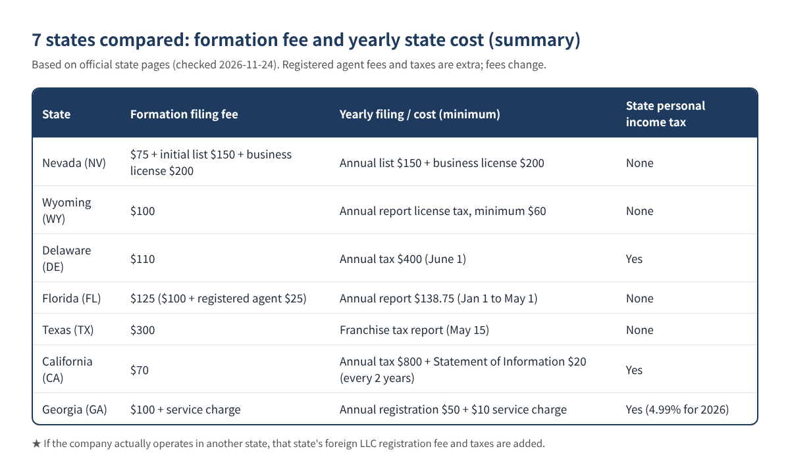
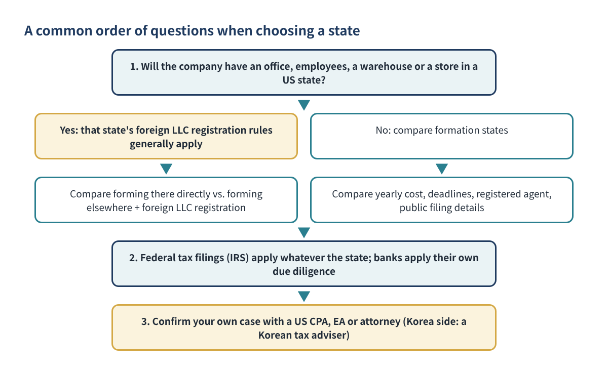
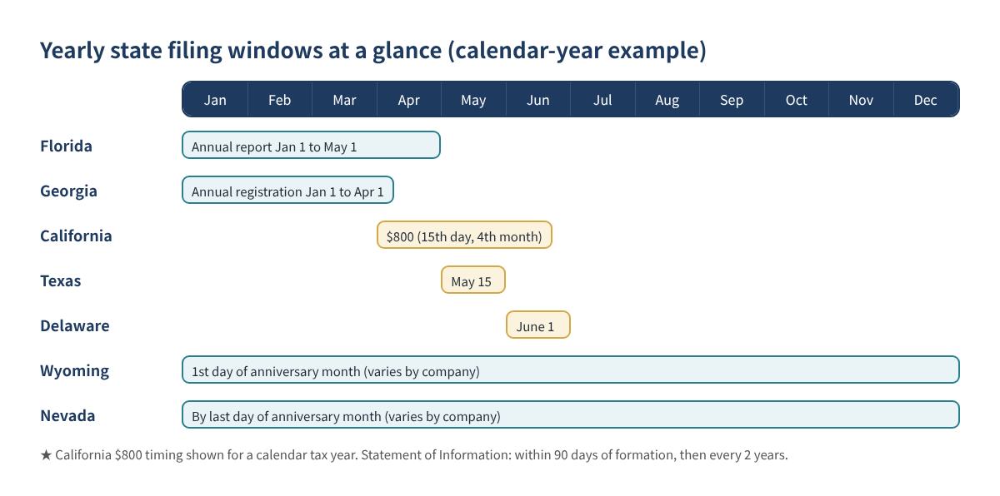

Which State Should a Nonresident Form a US LLC In? 7 States Compared: Nevada, Wyoming, Delaware, Florida, Texas, California, Georgia
"Which state should I form my LLC in?" is usually the first question a non-US founder asks. Online you will read that Wyoming is cheap, Delaware is prestigious and Nevada has no taxes. In practice, where the company actually does business can matter more than where it is formed. This guide compares Nevada, Wyoming, Delaware, Florida, Texas, California and Georgia side by side on the same criteria and addresses a common misconception.
This is general educational information, not tax, legal or financial advice. Fees and rules change; check official sources.
Who this is for
· Founders living outside the US who are comparing states for a new LLC
· Owners whose LLC was formed in one state but who plan to operate in California, Georgia or elsewhere
· Family members or advisers helping a non-US founder set up a US company
1. A common misconception: the formation state is not always the state where you pay
An LLC is a business structure allowed by state statute (IRS). The formation state is the company's "birthplace." If the company has an office, employees, a warehouse or a store in another state, that state's rules generally apply too.
- Texas: the Texas Secretary of State explains that an LLC formed elsewhere must apply for registration with Texas when it is transacting business in Texas. The registration fee is $750. An unregistered entity cannot maintain a lawsuit in a Texas court until it registers and may face a civil penalty equal to the fees and taxes it would have paid.
- California: the Franchise Tax Board (FTB) says every LLC that is organized in California, doing business in California or registered with the California Secretary of State must pay an $800 annual tax. FTB's "doing business" tests include transactions for financial gain in California, being organized or commercially domiciled there, and sales, property or payroll above thresholds (for 2025: sales over $757,070 or 25% of total sales; property or payroll over $75,707 or 25% of the total).
So "my LLC is in Wyoming, so California taxes don't apply" may be wrong if the company actually operates in California. In that case the owner pays the formation state's yearly costs plus the operating state's foreign LLC registration fee, yearly tax and a second registered agent. Whether a company is "doing business" in a state depends on the facts, so confirm your own case with a US CPA, EA or attorney.
Also, the basic federal tax framework does not depend on the formation state. The IRS treats a single-member LLC by default as an entity disregarded as separate from its owner and a multi-member LLC as a partnership, and an LLC can elect corporate treatment on Form 8832. The IRS Form 5472 instructions explain that a foreign-owned US disregarded entity files a pro forma Form 1120 with Form 5472 attached, and that review is needed whichever state the LLC is formed in.
2. Six comparison criteria
- Formation filing fee — the one-time state fee
- Yearly filings, taxes and due dates — annual reports, annual taxes, franchise tax
- State personal and corporate income tax — income taxes that may reach the owner or the company
- Gross-receipts, commerce or margin-type taxes — state taxes tied to revenue size
- Registered agent — whether an agent with an in-state address is required
- What public state filings show — whether manager or member names appear on formation or annual filings
3. Formation fees and yearly state costs
The figures below come from each state's official pages (checked 2026-11-24). Registered agent service fees, local licenses and adviser fees are not included.
| State | Formation filing fee | Yearly filing / cost | Yearly due date |
|---|---|---|---|
| Nevada | Articles $75 + initial list of managers or members $150 + state business license $200 | Annual list $150 + business license $200 (late fee for the list $75) | By the last day of the anniversary month |
| Wyoming | $100 | Annual report license tax: $60 or 0.0002 of Wyoming assets, whichever is greater | 1st day of the anniversary month (dissolution risk if unpaid within 60 days) |
| Delaware | $110 | LLC annual tax $400, no annual report (late: $200 penalty + 1.5% interest per month) | On or before June 1 |
| Florida | $125 ($100 + registered agent designation $25) | Annual report $138.75 ($400 late fee if received after May 1) | January 1 to May 1 |
| Texas | $300 | Franchise tax report (below the threshold, a Public Information Report or Ownership Information Report is still filed) | May 15 each year |
| California | $70 | Annual tax $800 + Statement of Information $20 (within 90 days of formation, then every 2 years) | 15th day of the 4th month of the tax year |
| Georgia | $100 filing fee + online service charge | Annual registration $50 + $10 service charge | January 1 to April 1 |
Two official Georgia Secretary of State pages list different online service charges for formation ($5 and $10), so this guide leaves that amount out; check the final amount on the filing screen. The Wyoming license tax wording follows the official fee schedule: "$60 or two-tenths of one mill on the dollar ($.0002), whichever is greater."

4. State tax structure compared
Separate from how the LLC is taxed federally, each state has its own income or revenue-based taxes. A nonresident can still have state filing duties on income sourced to that state. For example, California FTB Publication 1100 explains that California taxes nonresidents on California-source income, and the Delaware Division of Revenue gives examples of nonresidents with Delaware-source income filing a nonresident return (PIT-NON).
| State | State personal income tax | State corporate income tax (if taxed as a corporation) | Gross-receipts / commerce / margin-type tax |
|---|---|---|---|
| Nevada | No individual income tax (Department of Taxation) | Not separately described on the Department's page — check directly | Commerce Tax: Nevada gross revenue over $4,000,000 per fiscal year (no filing requirement at or below) |
| Wyoming | None (Wyoming Business Council) | None (same source) | None described there |
| Delaware | Yes (examples of nonresident filing with Delaware-source income) | 8.7% of federal taxable income allocated and apportioned to Delaware | Gross receipts tax and annual business license requirement |
| Florida | None (Department of Revenue) | 5.5% (per the Department's Form F-1120A); includes entities taxed federally as corporations | None described there |
| Texas | None (Texas Comptroller) | Franchise tax instead of a corporate income tax | Franchise tax: no-tax-due threshold $2,650,000 for 2026 and 2027; rates 0.375% retail/wholesale, 0.75% other |
| California | Yes (nonresidents taxed on California-source income) | Yes; corporate minimum franchise tax $800 | LLC fee from $900 to $11,790 once California income reaches $250,000 (see below) |
| Georgia | Yes; flat 4.99% for 2026 | 4.99% (Department of Revenue) | Separate corporate net worth tax |
California's LLC fee is based on total California income: $900 for $250,000 to $499,999, $2,500 for $500,000 to $999,999, $6,000 for $1,000,000 to $4,999,999 and $11,790 for $5,000,000 or more (FTB). It is in addition to the $800 annual tax, and FTB says the first-year exemption applied only to tax years beginning in 2021 through 2023.
Note: a "no-tax state" usually means the state has no personal income tax. Federal income tax, federal filings (such as Form 5472), taxes in the state where you actually operate, sales tax and payroll taxes are separate. For example, Nevada's Commerce Tax FAQ also mentions a separate Modified Business Tax (MBT), so an employer should check whether it applies in the Department's guidance.
5. Registered agents and what public filings show
All seven states require a registered agent with an in-state address. What appears on public filings differs; the table below is based on what each state's formation or annual filing forms ask for.
| State | Registered agent | Manager / member details on formation or annual filings |
|---|---|---|
| Nevada | Required, with a street address for service (NRS 86.231) | Annual list shows names, titles and addresses of managers (or managing members) (NRS 86.263) |
| Wyoming | Required, with a physical Wyoming address | Articles form has no member or manager name field (organizer signs; addresses and contact listed) |
| Delaware | Required, with a Delaware registered office | Certificate of formation form has no member or manager name field (authorized person signs) |
| Florida | Required, physical Florida street address (no P.O. box) | Manager or authorized representative names are optional; members are not to be listed |
| Texas | Required; the LLC cannot be its own agent | Names and addresses of initial managers or members (Form 205) |
| California | Required (Agent for Service of Process) | Statement of Information lists managers (or members if none); addresses are public record |
| Georgia | Required, located in Georgia | Only the company name is required in the articles; manager names are optional |
Important: this describes only what appears on public state filings. Even where a state filing shows no names, the true owners must be reported accurately to the IRS (for example, on Form 5472), to banks under their know-your-customer checks and on any other required federal or state filing. Nominee owners or inaccurate information can lead to legal problems.
FinCEN's beneficial ownership information (BOI) reporting changed significantly from 2025. FinCEN now says that all entities created in the United States and their beneficial owners are exempt from BOI reporting, and that a final rule dated August 11, 2026 made this permanent, effective August 14, 2026. FinCEN's page explains that entities formed under the law of a foreign country and registered to do business in a US state must report unless another exemption applies. The rules may change again, so check FinCEN's own page.
6. State-by-state notes: when each is usually considered
These are general tendencies, not recommendations.
Nevada
No individual income tax, and the Commerce Tax applies only above $4,000,000 of Nevada gross revenue. In return, the first year costs $75 for the articles, $150 for the initial list and $200 for the business license, and $150 plus $200 repeat every year. Founders who operate, or plan to operate, in Nevada usually look at it.
Wyoming
$100 to form and a $60 minimum annual license tax give Wyoming one of the lower yearly state costs of the seven, and it is described as having no personal or corporate income tax. An online-only business with no physical US presence may include it in the comparison, but operating in another state adds that state's registration and taxes.
Delaware
$110 to form and a $400 LLC annual tax by June 1, with no annual report. It can be put on the list when investment or a later conversion to a corporation is in view. A company actually operating in Delaware also needs to review the gross receipts tax, the business license and corporate income tax (8.7% if taxed as a corporation).
Florida
$125 to form and a $138.75 annual report, with a $400 late fee after May 1. No personal income tax, but entities taxed federally as corporations pay the 5.5% corporate income tax. Where a Florida office exists or is planned, forming there directly can be compared.
Texas
The $300 formation fee is on the higher side, and there is no personal income tax. Texas LLCs are subject to the franchise tax; with total revenue at or below $2,650,000 for 2026 or 2027 no tax is due, but a Public Information Report or Ownership Information Report is still due by May 15. For a company actually operating in Texas, the foreign registration fee ($750) can be compared with the Texas formation fee ($300).
California
Included because Korean-American owners may already run businesses there. Formation costs only $70, but the $800 annual tax applies every year and the LLC fee is added once California income reaches $250,000. The key point: an LLC formed elsewhere that is treated as doing business in California generally needs to review the $800 tax, the LLC fee if applicable and foreign registration ($70). Where a California office, employees or warehouse exists or is planned, comparing that with forming in California directly is common.
Georgia
Like California, included because Korean-American owners may already run businesses there. A $100 filing fee and a $50 annual registration (plus a $10 service charge) between January 1 and April 1 keep state fees low, but Georgia has a flat 4.99% personal income tax for 2026. An LLC that skips the annual registration is subject to administrative dissolution; reinstatement within 5 years costs $260. Founders actually operating in Georgia can compare forming there directly.

7. A step-by-step order to work through
- List where the business really operates: any office, employees, warehouse, store or inventory in a US state, now or planned.
- Read that state's rules: its Secretary of State foreign LLC registration page and its tax agency's "doing business" guidance.
- Compare forming there directly: total two to three years of state costs for forming there versus forming elsewhere plus foreign registration.
- With no US presence, apply the six criteria: fees, yearly costs and deadlines, taxes, registered agent and public filing details.
- Plan federal filings: EIN and Form 5472 apply the same way whichever state you choose.
- Plan the bank account: banks and fintechs apply their own due diligence and may ask about the formation state and business address.
- Confirm with professionals: your own case with a US CPA, EA or attorney; home-country obligations with a local tax adviser and your bank.
8. Worked example: invented company "Hanbit Craft LLC"
An owner living in Seoul plans a single-member LLC selling handmade goods online. In year 1 there is no US presence; in year 2 the owner plans to lease a small warehouse in California and hire one employee. The sample values below compare state government fees only; registered agent fees, adviser fees, the California LLC fee and federal tax are excluded.
| Item (sample values) | Option A: Wyoming LLC, later registered in California | Option B: California LLC from the start |
|---|---|---|
| Year 1 (no US presence) | Wyoming formation $100 | Formation $70 + Statement of Information $20 + annual tax $800 = $890 |
| Year 2 (California warehouse and employee) | Wyoming license tax $60 + California foreign LLC registration $70 + Statement of Information $20 + annual tax $800 = $950 | Annual tax $800 |
| Registered agents | Two (Wyoming and California) | One (California) |
| Yearly state filings to track | Two states, different deadlines | One state |
In this example Option A costs less in year 1, but once California operations start, two states' costs and filings overlap. When the timing and size of a California expansion are uncertain, running this comparison over two to three years is a common approach. The real answer depends on facts such as revenue, employees and inventory location.

Home-country obligations, for Korean residents. A Korean resident who owns a US company or a US account may have Korea-side obligations, such as overseas direct investment reporting under Korea's foreign exchange rules, overseas financial account reporting, and filing information on overseas subsidiaries with the National Tax Service. Whether these apply, and the thresholds and deadlines, depend on the person's situation, so confirm with a Korean tax professional or your bank. Residents of other countries should check their own country's rules.
9. Common mistakes
- Looking only at the formation state: keeping just a Wyoming LLC while employing staff in California can miss a review of California registration and the $800 annual tax.
- Reading "no-tax state" as "no tax": federal tax and filings and the operating state's taxes still apply.
- Missing yearly deadlines: Florida adds a $400 late fee after May 1, Delaware a $200 penalty plus 1.5% interest per month, and a Wyoming company unpaid within 60 days faces dissolution.
- Assuming "no tax due" in Texas means no filing: a Public Information Report or Ownership Information Report is still required.
- Confusing public state records with federal reporting: even if a state filing shows no names, the IRS and banks receive true owner information.
- Using outdated fee lists: fee schedules are revised; recheck the state's official page before filing.
10. FAQ
Q1. With no US office, does the state matter?
With no physical US presence, the formation state's costs and filings are often the main comparison. If the situation changes, for example inventory in a US warehouse or a US employee, check that state's rules again.
Q2. My LLC is in Wyoming and I am starting business in California. What happens?
Generally the LLC registers with the California Secretary of State as a foreign LLC (Form LLC-5, $70) and reviews FTB's $800 annual tax, the LLC fee if applicable and the Form 568 return. Moving the company to California is another route, but discuss the process and tax effects with a professional.
Q3. Delaware is said to suit investors. Does that apply to LLCs?
Delaware asks LLCs for no annual report and a $400 annual tax. Whether it fits an investment structure depends on investor requirements and entity type, so check with an attorney. The tax differences between an LLC and a C-Corp are covered in the next post of this series.
Q4. If I choose a state whose filings show no names, can owners stay hidden?
No. Only the content of public state filings differs; true owner information must still be reported accurately to the IRS, to banks under their customer checks and on other required filings.
Q5. Does a US-formed LLC have to file a FinCEN BOI report?
FinCEN currently says entities created in the United States and their beneficial owners are exempt from BOI reporting. Companies formed abroad and registered in a US state may have to report. The rules change often, so check FinCEN's page.
11. Checklist
- ☐ Listed any US office, employees, warehouse or inventory locations
- ☐ Read the foreign LLC registration and "doing business" guidance for those states
- ☐ Compared forming there directly vs. forming elsewhere plus foreign registration over 2 to 3 years
- ☐ Put the formation state's yearly deadlines on a calendar
- ☐ Chose a registered agent and checked the address rules
- ☐ Confirmed the federal filing schedule (EIN, Form 5472)
- ☐ Checked home-country reporting duties with a local tax adviser and bank
- ☐ Rechecked the official state fee schedule right before filing
12. Related posts
- US LLC Guide for Korean Nonresidents: Two Filings That Matter More Than Formation
- Opening a US business bank account as a nonresident (series 1)
- How nonresidents get an EIN (series 2)
- Form 5472 and pro forma 1120 for foreign-owned single-member LLCs (series 3)
This article is general educational information and is not tax, legal or financial advice. State fees, tax rates, filing deadlines and federal reporting rules change often, and the figures here reflect the check date shown in the sources. Which states' rules apply to your company depends on your facts, so before deciding, check each state's official pages and IRS and FinCEN guidance, and consult a US CPA, EA or attorney (and, for home-country obligations, a tax professional in your country).
Sources
- Nevada Secretary of State, Fee Schedule – LLC (August 1, 2023 version) — checked 2026-11-24
- Nevada Revised Statutes chapter 86 (NRS 86.231, 86.263) — checked 2026-11-24
- Nevada Department of Taxation, Commerce Tax — checked 2026-11-24
- Nevada Department of Taxation, Commerce Tax FAQs — checked 2026-11-24
- Nevada Department of Taxation, Income Tax in Nevada — checked 2026-11-24
- Wyoming Secretary of State, Business Division Filing Fee Schedule (revised June 2026) — checked 2026-11-24
- Wyoming Secretary of State, LLC Articles of Organization and instructions — checked 2026-11-24
- Wyoming Secretary of State, Registered Agents FAQ — checked 2026-11-24
- Wyoming Business Council, Business Resources — checked 2026-11-24
- Delaware Division of Corporations, Pay LLC/LP/GP Taxes — checked 2026-11-24
- Delaware Division of Corporations, Fee Schedule (revised August 1, 2026) — checked 2026-11-24
- Delaware Division of Corporations, LLC Certificate of Formation form — checked 2026-11-24
- Delaware Division of Revenue, Corporate Income Tax — checked 2026-11-24
- Delaware Division of Revenue, Doing Business in Delaware — checked 2026-11-24
- Delaware Division of Revenue, Personal Income Tax FAQs — checked 2026-11-24
- Florida Division of Corporations (Sunbiz), LLC Fees — checked 2026-11-24
- Sunbiz, LLC Annual Report help — checked 2026-11-24
- Sunbiz, Instructions for Articles of Organization — checked 2026-11-24
- Florida Department of Revenue, Corporate Income Tax — checked 2026-11-24
- Florida Department of Revenue, Form F-1120A (R. 12/26, 5.5% rate) — checked 2026-11-24
- Florida Department of Revenue FAQ (personal income tax) — checked 2026-11-24
- Texas Secretary of State, Form 205 instructions — checked 2026-11-24
- Texas Secretary of State, Form 205 — checked 2026-11-24
- Texas Secretary of State, Foreign or Out-of-State Entities — checked 2026-11-24
- Texas Comptroller, Franchise Tax — checked 2026-11-24
- Texas Comptroller, No Tax Due Reporting for Report Years 2024 and Later — checked 2026-11-24
- Texas Comptroller, Fiscal Notes (no personal income tax) — checked 2026-11-24
- California Secretary of State, Domestic LLC Forms and Fees — checked 2026-11-24
- California Secretary of State, Foreign LLC Forms and Fees — checked 2026-11-24
- California Secretary of State, Form LLC-12 and instructions — checked 2026-11-24
- California FTB, Limited Liability Company — checked 2026-11-24
- California FTB, Doing Business in California — checked 2026-11-24
- California FTB, Corporations — checked 2026-11-24
- California FTB, Pub. 1100 Taxation of Nonresidents — checked 2026-11-24
- Georgia.gov, Register an LLC with Georgia Secretary of State — checked 2026-11-24
- Georgia Secretary of State, How to Guide: Register a Domestic Entity — checked 2026-11-24
- Georgia Secretary of State, Filing Procedures for Forming a Georgia LLC — checked 2026-11-24
- Georgia Department of Revenue, Important Tax Updates — checked 2026-11-24
- Georgia Department of Revenue, Corporate Income and Net Worth Tax — checked 2026-11-24
- IRS, Limited Liability Company (LLC) — checked 2026-11-24
- IRS, Instructions for Form 5472 — checked 2026-11-24
- FinCEN, Beneficial Ownership Information Reporting — checked 2026-11-24